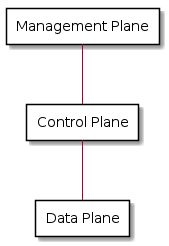
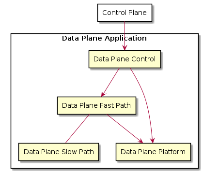

Introduction¶
Section author: Mattias Rönnblom <mattias.ronnblom@ericsson.com>
This text is an attempt at a guide to the structure and implementation of data plane applications. The focus lies on the part of the software which handles the bulk of the packets, often with a very tight latency budget. This book is about life in the fast path.
The applications of this book usually implements some kind of network stack. Although the book anchored them in the Data Plane Development Kit (DPDK) platform, most patterns and principles apply more widely, such as the network stack of an operating system kernel.
Audience¶
This book is written for software developers, software architects and system engineers. The assumption is that the reader possesses general software development skills, including good knowledge of the C language, and basic understanding of operating system level concepts, computer networks, and computer processors.
Networking Planes¶
The functionality of a computer network can divided into three logical layers; the data, control and management plane.

This section will describe what role the different layers take on.
In certain networks, the separation is externally visible, and the protocols used between the entities in the different layers are standardized. An example of such a network is the RAN of a 5G cellular network, where the Centralized Unit Control Plane (CU-CP) primarily handles control plane type tasks, and the Centralized Unit User Plane (CU-UP) handles the data plane.
In an IP network router, the separation into planes may exist only internally (or indeed, not at all). The protocols and means of communication between the different planes are proprietary 1 .
A pragmatic rule of a thumb for what type of processing goes into which plane is the rate of change, or rate of operations, the process entails.
The data plane usually handle one or two orders of magnitude more operations per second that does the control plane. The ratio between the management plane and the control plane is roughly the same.
A network function may be able to handle million of packets per second, a couple of thousands control plane operations per second, and a handful of management plane type operations per second.
Data Plane¶
The data plane the part of the network through which the actual user data traverse. A user here is an application on some end system (in a TCP/IP network, a host).
Commonly used synonyms are forwarding plane, in the context of IP routers or layer 2 switch implementations, or user plane, in the telecommunications sphere.
Control Plane¶
The control plane manages network topology and connection establishment (e.g., for networks connection-oriented at the data link, network or transport layer).
In an IP network, a router’s control plane uses protocols such as BGP to exchange routing and reachability information with control plane entities on adjacent routers in the network. The router builds a network topology and configure the forwarding information base (FIB) in the router’s data plane accordingly.
In a 3GPP RAN, the control plane handles issues related to mobility and bearer management for UEs, among other things.
An ATM network’s control plane manages the establishment and release of virtual circuits (VCs).
Management Plane¶
The management plane includes functionality for configuration and performance management of the network and its nodes.
In an IP router, the management plane may have clients, servers or agents terminating network management protocols such as SNMP and NETCONF, shell access such as SSH, and logging protocols such as syslog.
Requests that originates from a management plane entity, but which eventually need be serviced by a data plane control entity, usually, but not always, go via the control plane. In other words - network planes are not a strictly layered architecture.
In this book, no distinction is made between control and management plane, since this make little relevance for the data plane - the focus of this book.
Data Plane Applications¶
For the purpose of this book, a data plane application is a piece of software which implements a part of the data plane, on a particular node in the network.
This book concerns itself with applications written in a general-purpose programming language, run on a symmetric multiprocessing (SMP) processor.
At the core of the data plane application is some sort of a network stack. To manage complexity and achieve good performance, the network stack’s domain logic may be split in two; the fast path and the slow path.
The application’s fast path is usually written in C. In many cases, data plane control may be implemented in virtually any language.
Generally, the data plane has a tight per-packet hardware resource (e.g., CPU core cycles or DDR bytes read/written per packet) and/or energy (i.e., Joule/packet) budget. Per-packet CPU usage typically range from a couple of hundred to a couple of thousands core clock cycles, on the average. Packets that traverse the slow path generally consume much more resources.
A typical characteristic of the data plane application is that the core functionality is not very complex, in comparison with for example a desktop or an enterprise application. In terms of fast path code size, this usually translates to in the range from ten thousand lines of code for very small applications, to a couple of hundred thousand.
An application which performs very little per-packet processing is often referred to as low touch. The term implies only a small part of the packet, usually the header, is ever visited, but this book will not make this limitation, but only use the term to suggest it spend comparable few CPU core cycles per packet.
A high touch application has a relatively high per-packet processing latency. High touch applications often visit the entirety of the packet, including the payload. For the purpose of this book, even an application classified as high touch is low-touch enough to benefit from avoiding the overhead associated with packets passing through the kernel’s network stack.
In summary, a data plane application needs to solve a problem which is relatively low complexity from a domain logic point of view, but the solution must be very efficient, performant, and usually employ a high degree of parallelism.
Virtual and appliance-type switches and routers, firewalls, NAT boxes, network attached storage (NAS), intrusion detection systems, 5G CN and RAN implementations, and L4-L7 load balancers are all examples of systems which user data processing may be realized as one or more data plane applications.
Low Latency Non Data Plane Applications¶
There are types of applications, for example low-latency financial trading applications, that, even though they are not a part of the implementation of the network, still can make use technologies and techniques of the data plane.
Indeed, an application that receives stimuli at high rate over a network (or some other I/O device), quickly and reliably performs some kind of low latency processing and finally provides a response of some sort, may qualify as a data plane application, although in the literal sense it is not.
Low Capacity Data Plane¶
The are data plane applications that have comparably lax performance requirements, both in terms of throughput, wall-clock latency and efficient use of computer hardware. Thus, they can avoid many of the sometimes cumbersome and challenging techniques of this book.
Such an application could well sit on top of a general-purpose operating system network stack. Its authors have more freedom when it comes to the choice of programming languages and program structure.
Low capacity data plane applications are outside the scope of this book.
Data Plane Development Kit¶
The Data Plane Development Kit (DPDK) is an Open Source software platform for data plane applications. DPDK serves in the role of the data plane platform for the applications of this book.
The initial DPDK design was the work of Intel engineer Venky Venkatesan.
DPDK comes in the form of a set of link libraries, accessed through C APIs. A DPDK-based application runs as a user space process.
The original purpose of DPDK was to allow the user to bypass the operating system’s network stack, avoiding a substantial amount of overhead. In addition, for the Linux case, being a user space process makes sure the provisions of the GNU General Public License (GPL) license of the kernel does not apply, allowing for proprietary data plane applications.
With DPDK, the developer need not face the challenging programming environment of the kernel, and instead only have to deal with the somewhat less challenging DPDK programming model.
For DPDK to bypass the kernel, the Network Interface Controller (NIC) hardware (or a virtual function thereof) is mapped in the process’ address space. Instead of, or in addition to, the kernel’s NIC driver, the application uses a driver provided by DPDK, for that particular hardware. In addition to the NIC driver, a packet buffer memory manager is needed, but not much else in terms of infrastructure.
This “I/O only” way of using DPDK is still commonplace today.
Any non-trivial DPDK application will, as its core functionality grows, begin to require the kind of support functionality (e.g., for timer management and work scheduling) found in an operating system kernel.
With time, DPDK has included more and more of this kind of reusable platform type facilities. DPDK still largely adheres to the original library approach, with a smörgåsbord of functionality, as opposed to becoming an integrated special-purpose OS-like run-time environment for data plane applications.
Early on, DPDK only targeted commercial off the shelf (COTS) desktops and servers, but has since worked itself into the world of special-purpose networking ASICs. In such DPUs, the traditional network processing unit (NPU) have been replaced with a general-purpose multi-core CPU complex, augmented with various networking-specific accelerators and the occasional CPU instruction set architecture (ISA) extension.
Open Data Plane¶
DPDK has largely dislodged the Open Data Plane (ODP). ODP is a project with a similar goal, but grew inside the non-x86 and data processing unit (DPU) ecosystem. Part of the rationale for ODP was that DPDK lacked in support for various accelerators found in such processors, but DPDK has since gradually caught up with ODP.
Data Plane Fast Path¶
A common pattern is to split the per-packet data plane processing logic into two parts: the fast path and the slow path.
The fast path is designed to handle the bulk of the packets. The processing of packets which the fast path is not equipped to handle is delegated to the slow path. The reason for dividing the data plane application into a slow and fast path is to reduce complexity in the performance-sensitive and demanding fast path environment, and instead move it to the usually more relaxed and easier-to-deal-with slow path part of the data plane.
Some data plane applications do not make this distinction, and essentially do everything in the fast path application.
The fast path sits on top of a data plane platform. This book assumes the division of concern between the platform and the application to be that of DPDK, as opposed to a more opinionated platform like VPP.
To achieve high efficiency and to avoid extensive packet latency jitter, fast path processing is usually allocated a number of dedicated CPU cores.
Data Plane Slow Path¶
The slow path handles exception traffic. For network stacks taking a flow cache approach, such as Open vSwitch, the exception packets consists of the first packet encountered in a particular flow. For other data plane applications it may be certain flows, rather than certain packets within a flow, that are considered exception traffic. It may also be certain types of unusual packets, which processing is delegated to the slow path. In an IP context, ICMP and ARP/ND packets might be handed off to the slow path.
The slow path can also be used to terminate complex protocols, such as TCP (e.g., carrying management plane or control plane protocol traffic).
The slow path can be a standalone process, the operating system’s network stack, or threads within the same process as the fast path.
In case the slow path is hosted in a separate process, this process typically does not directly use DPDK.
Packets that traverse the slow path, as the name suggests, will experience greater wall-clock latency. The source of this latency is both that more CPU cycles are spent processing the packet, and operating system scheduling latency (since the slow path threads may not be run on a dedicated CPU core).
The slow path throughput is often several orders of magnitude lower than the fast path. That said, the slow path will usually also have soft real-time requirements in terms of latency, latency jitter, and throughput, although more relaxed than the fast path.
The division of the data plane into a slow and fast path potentially opens up for denial of service (DoS) attacks. An attacker may be able to, using only moderately-high packet rates, overwhelm the system, if the packets are crafted in such a way, they all require expensive slow path processing.
Data Plane Control¶
The data plane fast and slow path handles the processing of data plane packets, but there are other kinds of input to and output from a data plane application.
The data plane application needs to provide interfaces to allow for querying and manipulating its configuration and access statistics and state information. It may need to produce log entries or traces messages. The data plane application may interact with both entities in the control plane (either directly, or via some proxy) and platform type services.
Data plane control is conceptually a part of the data plane, and not the control plane.
Complex data plane control interfaces may warrant having the data plane control function implemented as a separate process. Such a split reduces the complexity hosted by the fast path process, making debugging easier. In addition, it also paves way for a clean separation between the two functions. In addition, a separate process makes it easy to use a different language for data plane control.
In case data plane control is a separate process, there will be an internal interface between the data plane control and the fast path processes. This interface must be terminated in the fast path process (e.g., by a control thread).
For some applications it may be feasible to run data plane control processing on the lcore worker threads. A shared memory interface, making inter-process communication relatively inexpensive, to the outside world may facilitate such a design. Care must be taken to avoid excessive processing latency for data plane control requests.
In some context, the term slow path is used for a software component serving in the data plane control role. Such usage of the word is misleading. The slow path handles user data (only slower), which is distinct from the task of data plane control.
Control Threads¶
In data plane applications that follows the DPDK pattern with one (and only one) thread per CPU core, it usually makes sense to have additional threads in the same process to terminate interfaces to the process-external world.
The reason for not using the per-core worker threads for such tasks is to avoid introducing latency jitter in the fast path processing. Handling a control plane request may be very costly in terms of amount of computation required, during which the worker thread won’t be handling packets queued up for processing.
In case the interface to the data plane application is some sort of file descriptor (e.g., referencing a socket) the system calls alone may introduce a noticeable jitter. Add to this the actual request processing latency, which may introduce delays in the millisecond class or more.
This book will use the term control threads for such threads.
Reference Architectures¶
This sections contains some examples of how a data plane application can be organized.
Reference Architecture A¶
This example shows an data plane application architecture where data plane control is split into two parts; one agent inside the fast path process, and another, with the bulk of the domain logic, as a separate data plane control process.
The operating system kernel is used to perform the actual slow path processing, suggesting that the protocol handled by the data plane fast path is one that the kernel implements (e.g., IP).
The data plane fast path application and its constituents are deployed together, as one process. The data plane control function is hosted by another process. The data plane application is a logical grouping of these two applications, possibly on the level of software packaging and/or from a process monitoring and application life cycle management point of view.
![@startuml
rectangle cp as "Control Plane" {
}
rectangle dp_app as "Data Plane Application" #line.dashed {
rectangle fp_app as "Data Plane Fast Path Application" {
rectangle dpc_agent as "Data Plane Control Agent"
rectangle fp as "Data Plane Fast Path"
rectangle platform as "Data Plane Platform"
}
dpc_agent --> fp
dpc_agent --> platform
fp --> platform
rectangle dpc_app as "Data Plane Control Application" {
rectangle dpc as "Data Plane Control"
}
dpc --> dpc_agent
}
cp --> dpc
rectangle kernel as "Operating System Kernel" {
rectangle kernel_stack as "Kernel Network Stack"
}
fp --> kernel_stack : Slow Path
@enduml](_images/plantuml-b75e693d356a66c2349351e847d03522b024f8ca.png)
Reference Architecture B¶
This architecture groups data plane control and the fast path into the same application, deployed in the same process.
Architecture B is also more centralized in that it doesn’t employ the kernel’s network stack as the slow path, but instead carry its own slow path domain logic.
Usually, the control and the slow path processing is run on threads separate from those processing user data packets. The system could either have separate threads for those two tasks, or share the same thread(s). Both the slow path and the control processing usually have soft real time requirement (i.e., some reasonable upper bound for latency), but the slow path is usually more strict and thus the use of RT scheduling policy (e.g., SCHED_RR), but with different priority levels may be feasible.
However, careful design and implementation and/or lax latency fast path jitter requirements may allow such processing to be performed on the lcore worker threads.

Network Function¶
A data plane application is usually packaged and deployed together with a number of supporting platform type functions, providing services such as process monitoring and management, and log handling. The data plane application may also be co-located with control plane or management plane components.
This book will refer to this entity as a network function. This is usually equivalent to a network node, although there are networks where the prevailing terminology is that a logical node is made up of multiple network functions.
The network function may carry its own operating system kernel, to be deployed in a Virtual Machine (VM), in which case it’s referred to as a Virtualized Network Function (VNF).
In case the data plane application and the supporting components are deployed in a container, the package will contain only the user space parts of the operating system (such as the C runtime library). In that case, it’s a Container Network Function (CNF). CNFs are usually more minimal, with much less platform type services included and no co-located control plane components.
A third deployment alternative is as a Physical Network Function (PNF) - a network appliance where the software runs on purpose-built hardware.
A carefully crafted data plane application, in combination with carefully selected appliance hardware, may facilitate application portability across all above-mentioned deployments.
Hardware Platforms¶
Processor¶
This books concerns itself with software for the kind of processor that is capable, at least in principle, to run a general-purpose operating system.
The processors are symmetric multi-processors (SMPs).
The processor can be a general-purpose server processor, or something essentially functionally equivalent, but hosted inside a specialized networking system-on-a-chip (SoC).
DPDK supports the most relevant ARM instruction set architectures, AMD64 (or IA-64 in Intel terminology), the Power ISA of the IBM POWER9 family, and RISCV. Although the aforementioned ISAs have no special networking-related instructions, there is nothing in DPDK that prevents the utilization of such such extensions, would they exist.
Accelerators¶
Memory¶
People¶
Why Data Plane Programming is Easy¶
Data plane software development, generally speaking, gives the programmer an easy problem, from a domain logic point of view, to solve in a demanding environment, with demanding characteristics requirement.
Why Data Plane Programming is Hard¶
One reason why writing data plane code is hard because high-performance, parallel programming is hard. C, which is generally still the language of choice in this domain, is no big help here, but also is kind enough to not be in the way. Despite C’s use in operating system kernels, it didn’t get a proper memory model until in ISO/IEC 9899:2011 (C11).
Data plane programming is also hard because of the immense complexity of modern CPUs. Their behavior is very difficult indeed to understand, or predict, both in performance and functional correctness (e.g., memory models).
As a result, debugging the data plane fast path is also harder than many other applications. In the fast path, the programmer need to care about low-level hardware characteristics, not relevant for many other application domains.
Data plane development is one of the few domains, together with operating system kernels, virtual machines and compilers, where there still are reasons for the developer to understand and occasionally author assembly code.
A thorough grasp of C11 atomics and memory models and their implementation in compilers and processors is required to understand of low-level synchronization primitives and lock-less programs. The topic is notoriously difficult, and even seasoned veterans (including experts involved in the C11 standardization effort) get things wrong. A further complication is that bugs caused by data races are very hard to test for, and often difficult to reproduce and debug.
Staffing Data Plane Projects¶
In essence, the typical data plane software project takes on a small task - in terms of man hours - but a difficult one. Manning a project with people without the appropriate skills, and attempting to compensate with higher head count, is a receipt for disaster.
This approach risk make the project’s code base not the small, nimble and performant application targeted, but instead a huge, slow beast, which main characteristic is its ability to display non-deterministic behavior.
Well-crafted data plane programs are often a challenge to comprehend. Poorly written data plane code is beyond human capabilities to decipher.
Data plane applications tend to be in the range from ten thousand to a couple of hundred thousand lines of code, and thus cannot accommodate a large team. Also, such applications tend to have higher coupling between the different parts, which further restricts the team size.
Data plane software development requires highly specialized skills and is also very cognitively demanding. That’s the downside. The upside is that you don’t need very many people.
If there’s anywhere the lessons of the Mythical Man-Month applies, it’s in the context of data plane software development.
Footnotes